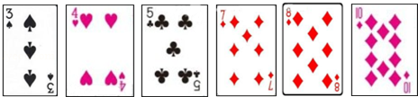
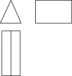

2014年北京市中考数学试题 · 选择题 第1、2、3、4、5题
1．（4分）（2014•北京）2的相反数是（ ）
A． 2 B． ﹣2 C． ﹣ D．
2．（4分）（2014•北京）据报道，某小区居民李先生改进用水设备，在十年内帮助他居住小区的居民累计节水300 000吨．将300 000用科学记数法表示应为（ ）
A． 0.3×106 B． 3×105 C． 3×106 D． 30×104
3．（4分）（2014•北京）如图，有6张扑克牌，从中随机抽取一张，点数为偶数的概率是（ ）

A． B． C． D．
4．（4分）（2014•北京）如图是几何体的三视图，该几何体是（ ）

A． 圆锥 B． 圆柱 C． 正三棱柱 D． 正三棱锥
5．（4分）（2014•北京）某篮球队12名队员的年龄如表：
则这12名队员年龄的众数和平均数分别是（ ）
A． 18，19 B． 19，19 C． 18，19.5 D． 19，19.5